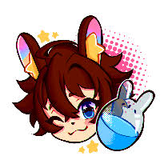

Featured Streamers

Gachapyon
YouTube
Join Gachapyon for amazing deep dives into niche fandoms and into the Art world.
Watch ChannelGamingGuru
Discord Streaming
Hang out with GamingGuru in voice chats and see live gameplay in our Discord!
Join Discord